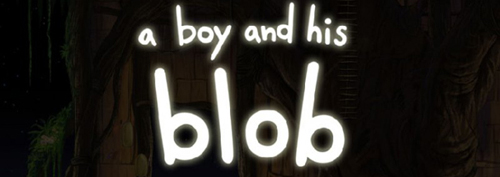
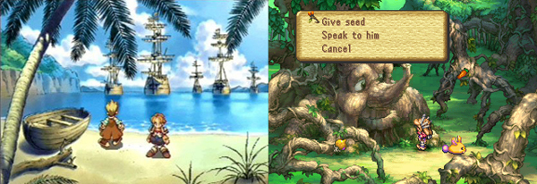
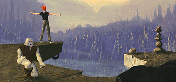
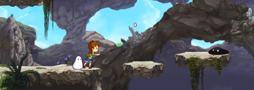

A Boy and His Blob Wii
2011-03-25 14:31:10
status: inherit
author: Bryan

I just heard about this. WayForward is reimagining A Boy and His Blob for Wii. The original was one of my NES favorites back in 1989.
In spite of my excitement to see this material and gameplay getting picked up again, I'm not sure how I feel about the art style and music. The original game was certainly not cartoonish at all and I feel would call for a less watercolory/Disney art style, although I certainly see the appeal in creating an aesthetic akin to Saga Frontier 2 or Legend of Mana on PS1.

I personally would love to see something Eric Chahi-esque in a Boy and his Blob remake.

Still... this is wild.
Now THIS is more like it! Musically speaking. This remake of the old theme makes it easy to see why the original was so memorable. Despite the fact that hearing this was tremendously satisfying, it would be pretty nifty to have a quirkier approach to the arrangement. Makes me think of Koji Kondo on Mario Galaxy (conventional orchestral) vs. ... well damn near every earlier Koji Kondo Mario composition and arrangement.
Despite my endless moaning and groaning, this could be a pretty kick-ass old school platformer on Wii, purely on the strength and potential of the original gameplay concept from '89.

Comments: